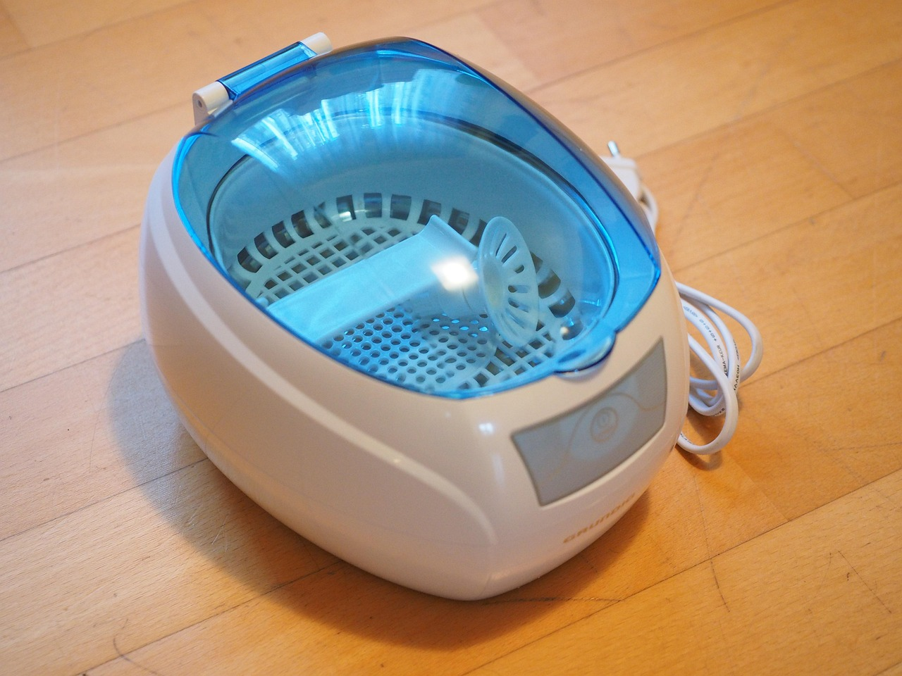

Ultrasonic Cleaning with Deionized Water
The essential role of pure water in high-performance cavitation and residue-free precision cleaning.

The essential role of pure water in high-performance cavitation and residue-free precision cleaning.
Ultrasonic cleaning relies on the process of cavitation—the rapid formation and collapse of microscopic vacuum bubbles in a liquid. When these bubbles collapse against a surface, they release intense energy that dislodges contaminants from even the most complex geometries.
The purity of the cleaning medium (the water) directly affects the efficiency of this process. Ordinary tap water contains dissolved minerals, gases, and particulates that can interfere with cavitation and, more importantly, leave behind deposits once the parts are dried.
Ultrasonic cleaning with deionized water is the standard in industries where "visually clean" is not enough. From medical devices to aerospace components, the removal of microscopic contaminants is vital for safety and performance.
In jewelry making, it removes polishing compounds from intricate settings without harming delicate metals. In electronics, it's used to clean circuit boards (PCBs) and removing flux residues without introducing conductive minerals that could cause shorts.
You can, but it is not recommended for precision work. Tap water contains minerals that create "dampening" of the ultrasonic waves and leave white spots on your parts as they dry. It also causes scale buildup in your machine.
Distilled water is pure, but deionized water is often preferred in industrial and lab settings because it can reach higher levels of purity (Type I or Type II) more efficiently, ensuring zero residue for critical applications.
Pure DI water is a powerful solvent on its own, but for grease or heavy oils, an ultrasonic-specific detergent is usually added to the DI water to lower surface tension and improve results.
For most general ultrasonic cleaning, ASTM Type II water is excellent. For highly sensitive electronics, semiconductors, or medical implants, Type I Ultra-Pure water is often required.
Heating the DI water (usually between 130°F and 150°F) generally improves the cleaning action by speeding up chemical reactions and improving cavitation intensity.
For critical ultrasonic cleaning applications, ASTM Type I water ensures zero mineral interference and perfect, residue-free results.
Shop ASTM Type I Water →